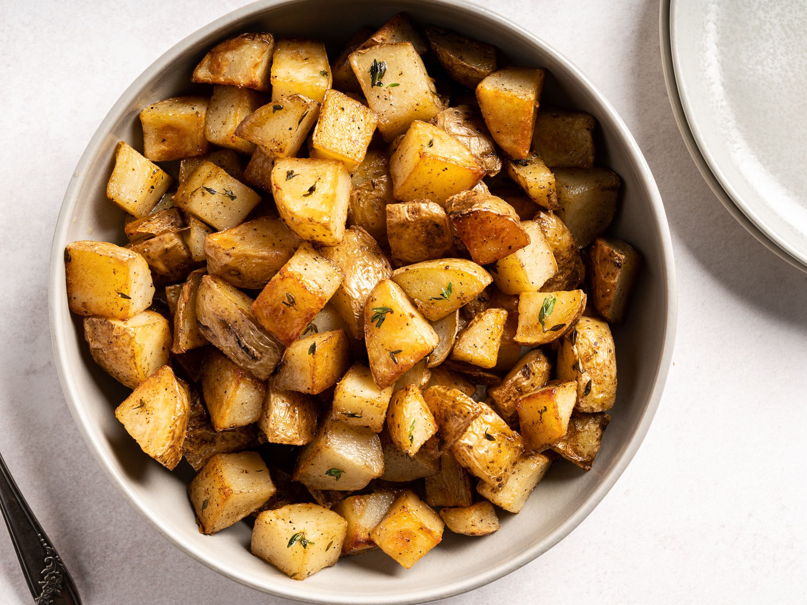

Boil 'em, mash 'em, stick 'em in a stew

These two recipes are an amalgomation of my own doing, I mixed the potatoes that go with the last recipe and covered them in butter instead of the cream sauce. I'm almost positive this has been done before but I'm willing to bet you'll love them as much as I do. I serve these with every celtic meal I make.
Ingredients
- 2 lb Red potatoes
- 6 sticks of butter (I know but its delicious)
- 1/4 cup shallots
- 4 Tsp water
- 1 tsp White pepper
- 2 Tsp White wine Vinegar
- 4 Tbs tarragon
- 6 Tbs lime juice
How to prepare
- First, cut the potatoes into fourths, melt a stick of butter and add some tarragon in with the butter, brush the mixture just like you did with the chicken in the last recipe. If you want, cover in white pepper in salt for flavor, this isn't neccesary though.
- Second, put the potatoes in the oven at 425F for about 20 minutes or until the starchy side is golden brown.
- When you have about 10 minutes left on the oven's timer, get a small saucepan and put the chopped shallots, water, vinegar, and red pepper into the pan. Let simmer until reduced by half, but NO MORE.
- When that's done, cut the butter into 1/4's and whisk one stick at a time in, the mixture should be hot but not boiling.
- When the butter is all melted in, continue to whisk for a minute or two, whilst you add the lime juice.
- Turn off stove and toss potatoes in sauce, or pour over potatoes and serve!
Note: The lime juice colliding with the vinegar is what gives this dish an excellent flavor, more or less is perfectly fine, just do it to your taste!